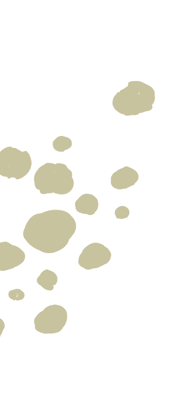
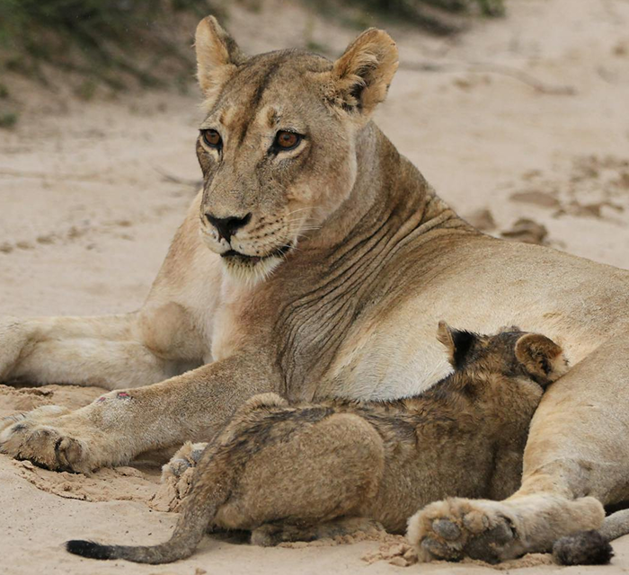
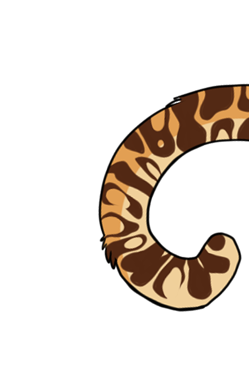
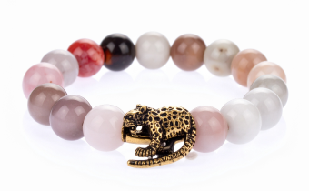
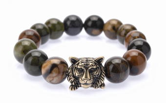
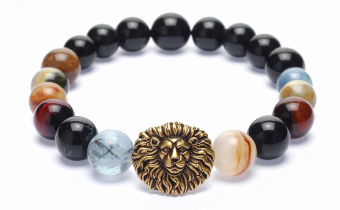
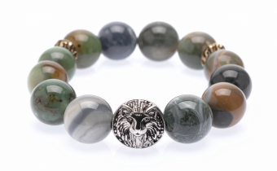

Pomaga naszej fundacji

Adoptując dzikiego kota, dajesz mu szansę na lepsze życie – a sobie przyjaciela na zawsze.

Kupując symboliczne produkty, takie jak certyfikaty adopcji czy gadżety z motywami dzikich kotów, wspierasz nasze projekty ochrony rysi, tygrysów i innych zagrożonych gatunków.Twoja pomoc to nie tylko piękny gest, ale realne wsparcie w ratowaniu dzikich kotów i ich siedlisk. Dołącz do nas i bądź częścią zmiany!

Pomaga naszej fundacji
Wykonana z miłością do zwierząt

Bezpłatna wysyłka
Pomaga naszej fundacji
Wykonana z miłością do zwierząt
Bezpłatna wysyłka
Pomaga naszej fundacji
Wykonana z miłością do zwierząt
Bezpłatna wysyłka

96,70 PLN

96,70 PLN

96,70 PLN

96,70 PLN
Fajna jakość, piękny cel, super pomysł. Kupiłam już drugą – jedna dla mnie, druga dla siostry. To trochę jak wspólne 'kocie' zobowiązanie, że chcemy coś zmienić.
Mega pomysł! Zamówiłem bransoletkę i jestem totalnie zakochany – jest prosta, ładna i ma super znaczenie. Fajnie wiedzieć, że gdzieś tam dzięki temu moja pantera (symbolicznie oczywiście) ma trochę lepiej. Polecam każdemu, kto chce zrobić coś dobrego bez wychodzenia z domu!
Piękna bransoletka z przesłaniem! Noszę ją z dumą, wiedząc, że pomagam chronić dzikie koty. Idealny prezent z sercem. Bransoletka jest elegancka i starannie wykonana, ale najważniejsze jest to, że wspieram działania ratujące dzikie koty.
Wiem, że jestem częścią czegoś ważnego. Symboliczna adopcja dzikiego kota to świetny sposób, żeby realnie pomóc, a jednocześnie codziennie przypominać sobie, że każde życie w naturze ma znaczenie.
Kiedy zobaczyłam możliwość symbolicznej adopcji tygrysa, nie wahałam się ani chwili. Bransoletka, którą otrzymałem, jest subtelna, a jednak ma ogromne znaczenie. To coś, co noszę z dumą – bo wiem, że wspieram walkę o przyszłość zagrożonych gatunków.
Kupiłam symboliczną bransoletkę z rysiem i przyszła w pięknym, ekologicznym opakowaniu! Fajnie wiedzieć, że część pieniędzy idzie na ochronę dzikich kotów.
Pomysł fajny, ale trudno znaleźć konkretne informacje, gdzie dokładnie trafiają środki z bransoletek. Chciałabym więcej przejrzystości.
© 2025 Beata Kurek | Fundacja Lynx Foundation ratująca dzikie koty. Wszystkie prawa zastrzeżone.
Zaobserwuj nas